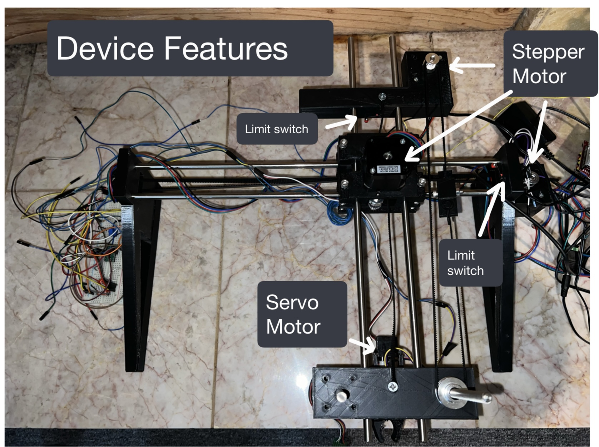

Automatic Writing Arm
This project features an automatic writing/drawing arm built with 3D printed components and driven by servo motors. The arm is programmed to replicate letters or images through X and Y coordinate plotting, giving it the ability to draw anything rendered from a vector input.
The system uses an Arduino-based controller, and each axis is calibrated for precision and smooth motion. The pen holder was designed with spring tension to ensure consistent contact with the paper surface.
Designed for experimentation in automated pen-plotting, this tool can be extended to applications like calligraphy, sketching, or as a hardware interface for drawing bots and CNC-like plotting systems.
Prototype View
